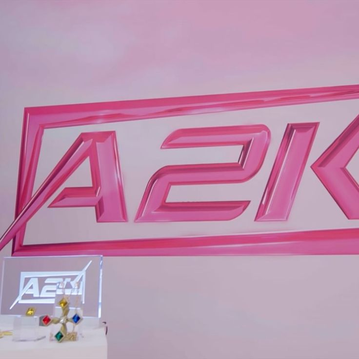
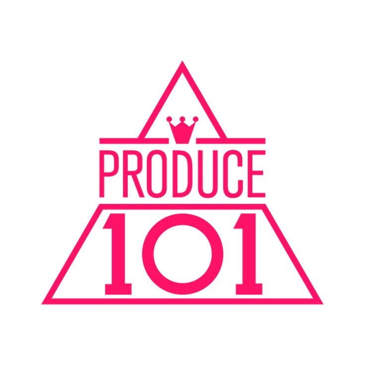
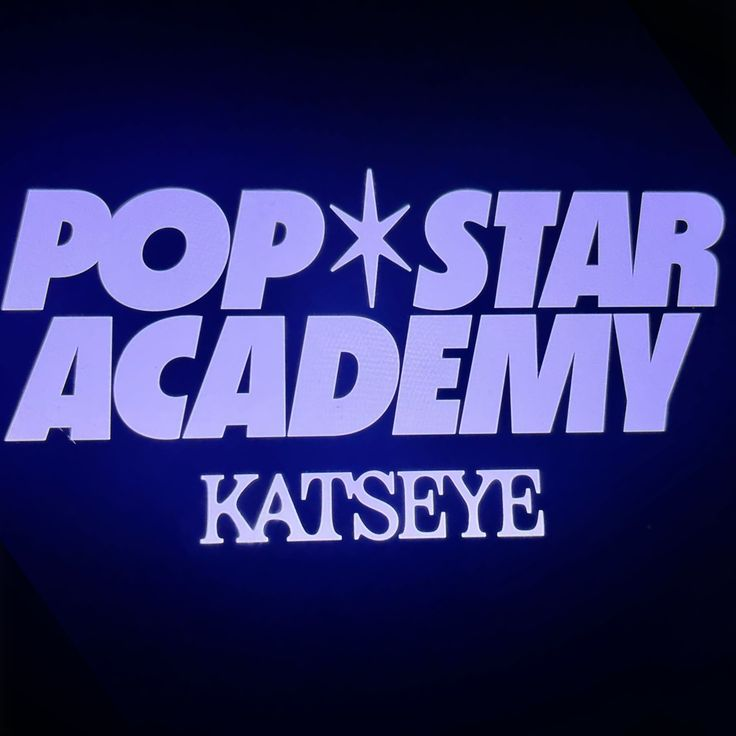

Becoming part of a girl group requires discipline, confidence, teamwork, creativity, and hard work. Watching survival shows and training documentaries can help future members understand what training, evaluations, performances, and teamwork are really like in the entertainment industry.

A2K documented the creation of the global girl group VCHA through auditions, training, and evaluations led by JYP Entertainment. The show focused on confidence, communication, teamwork, and personal growth. It demonstrated how determination and willingness to learn are essential in becoming part of a successful group.

Produce 101 introduced trainees competing for a place in debut groups while facing evaluations, performances, and public voting. The series became known for producing groups such as I.O.I while demonstrating both the pressure and excitement of survival programs. It highlights the importance of stage presence, improvement, and perseverance.

Pop Star Academy followed the journey of trainees preparing to debut in the global girl group KATSEYE. The documentary showcased the intense training process, emotional challenges, teamwork, and discipline required to become an artist in a professional environment. It highlights the importance of resilience, confidence, and continuous improvement.
SIXTEEN was the survival show created by JYP Entertainment that formed the girl group TWICE. The show focused on performance skills, teamwork, confidence, and determination. Watching SIXTEEN helps future trainees understand the competitive nature of training while also showing how friendships and teamwork develop throughout the process.